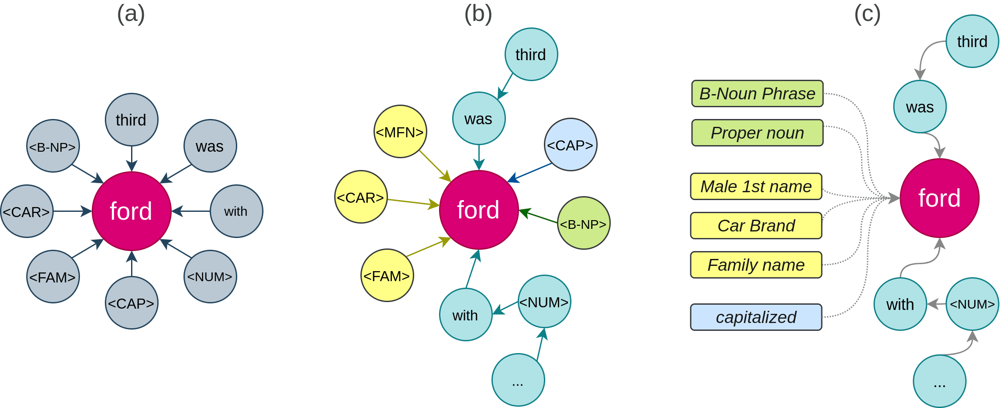

Named Entity Recognition as Graph Classification
Motivation
Injecting real-world information (typically contained in Knowledge Graphs) and human expertise into an end-to-end training pipeline for Natural Language Processing models is an open challenge. In this preliminary work, we propose to approach the task of Named Entity Recognition, which is traditionally viewed as a Sequence Labeling problem, as a Graph Classification problem, where every word is represented as a node in a graph. This allows to embed contextual information as well as other external knowledge relevant to each token, such as gazetteer mentions, morphological form, and linguistic tags. We experiment with a variety of graph modeling techniques to represent words, their contexts, and external knowledge, and we evaluate our approach on the standard CoNLL-2003 dataset. We obtained promising results when integrating external knowledge through the use of graph representation in comparison to the dominant end-to-end training paradigm.
In one illustration

What external knowledge?
Grammatical tags
We use the Part of Speech tags (POS) e.g. ‘Noun’, ‘Verb’, ‘Adjective’, as well as the shallow parsing tags (chunking) e.g. ‘Verbal Phrase’, ‘Subordinated Clause’ etc.
Letter case
The presence of uppercase letters usually signify that a word refers to an entity. We thus add the following tags: ‘Capitalized’ if the word starts with a capital letter, ‘All Caps’ if the word is made of only uppercase letters, and ‘Acronym’ if the word is a succession of uppercase letters and periods.
Gazetteers
We generate lists of words that are related to potential entity types such as “Person First Name” and “Capital”.
To do so, we selected 14 classes from the Wikidata Knowledge Base that correspond to some of the entity classes (see table below) and used the public SPARQL endpoint to generate the gazetteers. For each of these classes, we query Wiki-data for all entities belonging to that class, a direct subclass of it, or a sub-class of a subclass of it (going any further made the queries much slower and yielded diminishing returns). For each entity, we get all English labels associated with it (from the properties rdfs:label, skos:altLabel) and keep the labels containing only one word. When creating the input graph, if the central node’s word appear in one of the gazetteers, we attach it to the appropriate tag, i.e. if the central node stands for the word “Ford”, it will be attached tothe nodes ‘family name’ (wd:Q11247279), ‘car brand’ (wd:Q44294), ‘male given name’ (wd:Q21021650) and so on. Because of the high number of subclasses for each category, we only keep the top category information for each label when using these gazetteers for ourexperiments.
| Class | QID | Subclasses | # Instances | # One-word Labels |
|---|---|---|---|---|
| Artist | Q483501 | 350 | 436 | 60 |
| Brand | Q431289 | 42 | 8194 | 3558 |
| Capital | Q5119 | 15 | 602 | 183 |
| City | Q515 | 3528 | 33101 | 8681 |
| Country | Q6256 | 51 | 699 | 197 |
| Demonym | Q217438 | 6 | 620 | 538 |
| Family name | Q101352 | 122 | 376094 | 315683 |
| Geolocation | Q2221906 | 190 | 10584664 | 276607 |
| Georegion | Q82794 | 978 | 6164118 | 568681 |
| Given name | Q202444 | 56 | 74182 | 60472 |
| Name | Q82799 | 308 | 542138 | 9504 |
| Organization | Q43229 | 3528 | 2906668 | 218091 |
| Product | Q2424752 | 3838 | 722076 | 29241 |
| Town | Q3957 | 39 | 44858 | 23983 |
Graph representations
The literature on graph representations is extremely diverse and rich. For our experiments, we chose a representative algorithm from each big "family": a shallow neural auto-encoder, Node2Vec (node embeddings), TransE (entity embeddings), and a Graph Convolution Network (inpired by this architecture). We also train a two-layers neural network on a simple binary embedding of graph nodes as a baseline.
The challenge of representing graphs does not end there, as we can materialize the idea expressed so far in multiple ways:
- What constitutes the nodes of the graph and what can be modeled as a feature of the said nodes?
- How to connect these nodes? Should everything be connected to the central node or should the connection reflect the order in the sentence? Should these relations be semantic, i.e. of different types?
- Should we account for the entire context of the word or just limit it to a fixed-size window, and if so, what should be this window size?
- What is the direction of information propagation through the graph?

Results
This table shows the empirical results obtained by each method on the CoNLL-2003 dataset. The entries marked with “+” represent the models with external knowledge added to the words and their context.
| Method | Dev m-F1 | Dev M-F1 | Test m-F1 | Test M-F1 |
|---|---|---|---|---|
| Auto-encoder | 91.0 | 67.3 | 90.3 | 63.2 |
| Auto-encoder+ | 91.5 | 71.7 | 91.5 | 70.4 |
| Node2Vec | 93.3 | 81.6 | 90.0 | 68.3 |
| Node2Vec+ | 94.1 | 82.1 | 91.1 | 72.6 |
| TransE | 91.8 | 75.0 | 91.7 | 70.0 |
| TransE+ | 93.6 | 78.8 | 91.9 | 74.5 |
| GCN | 96.1 | 86.3 | 92.9 | 78.8 |
| GCN+ | 96.5 | 88.8 | 94.1 | 81.0 |
| LUKE [*] | 94.3 |
We observe a significant decrease in performance for all models between the evaluation and test sets (with a varying intensity depending on thechoice of the model) that is probably due to the fact that the test set contains a lot of out-of-vocabulary words that do not appear in the training set. Thus, they lack a node representation that we can feed to the network in inference time. We also see that adding the external knowledge consistently improve theperformance of the graph models on both Micro-F1 and Macro-F1 for all models considered. Finally, while the performance on the test set for all graph-onlymode ls is still behind LUKE, the best performing state of the art NER model on ConLL-2003, we observe that these models are significantly smaller and thus faster to train (in matters of minutes once the graph embeddings are gener-ated), when using a simple 2-layers feed-forward neural as a classifier.
These preliminary results show promising directions for additional investigations and improvements, of which we note:
- Adding linguistic representations as features to the nodes (e.g. word embeddings)
- Experimenting with other graph models
- Pretraining the graph representations on a larger corpus
- Adding attention among the different word/node representations